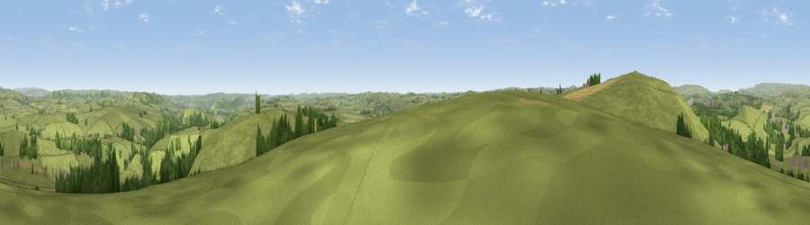

Viewpoint near Taddington
#15501 in England · top 21% of its area beats it · near TaddingtonWhere it is
The exact computed spot (SK 14175 70725). Click the marker for map links.
The view, rendered

A 360° render of this exact spot computed from the terrain model, tree cover and land cover — summer colours, afternoon light, calibrated against photographs of famous viewpoints. Real trees, hedges and buildings will differ in detail.
The panorama
Grey silhouette: terrain skyline in each direction (720 bearings, Earth curvature and refraction included). Dashed green: skyline with trees (+15 m) and buildings (+8 m) as obstacles. Blue strip: how far the ground is visible on each bearing.
Where the view opens
Wedge length = distance to the farthest visible ground on that bearing (vegetation-aware). Rings at 10, 25 and 50 km.
What fills the view
86% grassland · 11% woodland · 2% cropland · 1% built-up
Angular shares of the visible panorama (visual magnitude), not map area. Landscape diversity 0.22 (0–1 Shannon).
Key numbers
More beautiful places nearby
The staircase of upgrades: each row has a higher view potential than everything closer. Driving times are estimates from straight-line distance, calibrated against real road routing — check an actual route before setting out.
| Place | Direction | Drive | Score |
|---|---|---|---|
| Viewpoint near Taddington | WNW · 1 km | ~3 min | 60.2 |
| Chelmorton Low | W · 3 km | ~7 min | 61.2 |
| Viewpoint near Earl Sterndale | SW · 6 km | ~12 min | 64.7 |
| Viewpoint near Earl Sterndale | WSW · 6 km | ~12 min | 66.3 |
| High Rake | ENE · 7 km | ~15 min | 71.1 |
| Lord's Seat | NNW · 13 km | ~24 min | 73.1 |
| Viewpoint near Meerbrook | WSW · 16 km | ~28 min | 73.5 |
| Tissington Hill | S · 18 km | ~31 min | 75.5 |
53.23337, -1.78910 · source: screening · position refined by local search. Computed location — check access rights before visiting.